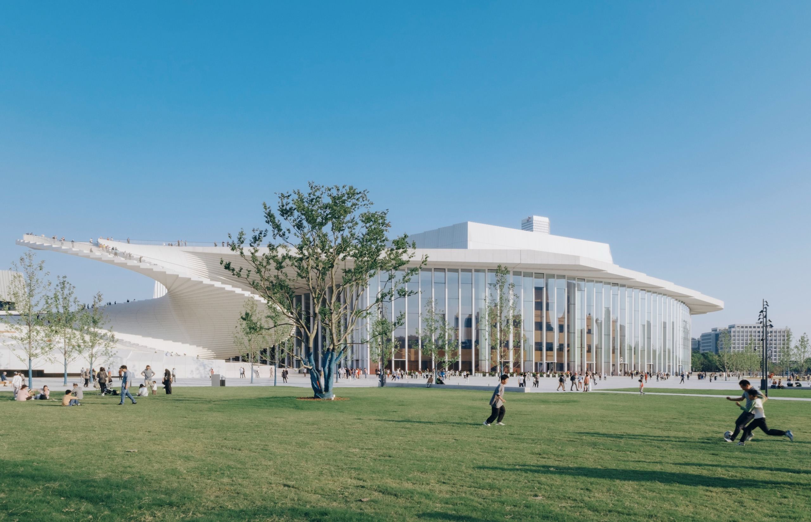

THE ISSUE 25 stories
A slower Sunday, properly filled 
Featured: Snøhetta’s Shanghai Grand Opera House opens with a walkable public roof (story 1). Image: Yumeng Zhu / Wallpaper* . Sunday, October 18, 2026 · A daily snapshot, not a live feed
Design and architecture Design and architecture 01 1 min read
Shanghai’s opera house turns its roof into public ground Snøhetta’s Shanghai Grand Opera House has opened beside the Huangpu River with a walkable roof and three auditoriums holding 4,200 seats.
Read the briefing + Snøhetta’s Shanghai Grand Opera House has opened beside the Huangpu River with a walkable roof and three auditoriums holding 4,200 seats.
Setting: The building sits within a free public park on a linear waterfront plot in Shanghai.Detail: A sculptural roof folds down to the ground, becoming an observation deck, promenade and outdoor performance space.Why it earns attention: It treats a cultural landmark as civic ground first, not as a sealed room for ticket holders.2026-10-17 · Wallpaper*
Design and architecture 02 1 min read
A fossil museum burrows into the Gobi The Hami Pterosaur Museum in Xinjiang uses an eight-thousand-square-metre, partly underground form to meet the desert on its own terms.
Read the briefing + The Hami Pterosaur Museum in Xinjiang uses an eight-thousand-square-metre, partly underground form to meet the desert on its own terms.
Design: Turenscape placed most of the museum about eight metres below grade, with five exhibition halls and light funnels.Context: The museum draws on Hami’s fossils while natural ventilation and an on-site solar farm respond to summer heat above 55°C.Caveat: The reported energy savings are the architects’ estimates.2026-10-16 · The Guardian
Design and architecture 03 1 min read
Vienna’s Stadttempel gets a careful second century The two-hundred-year-old Stadttempel, the only Viennese synagogue to survive the 1938 pogroms, has reopened after a ten-month restoration.
Read the briefing + The two-hundred-year-old Stadttempel, the only Viennese synagogue to survive the 1938 pogroms, has reopened after a ten-month restoration.
History: Josef Kornhäusel completed the oval synagogue in 1826; it was the only one in Vienna not destroyed in 1938.Restoration: KENH restored the entrance and original stone, integrating acoustics, heating and cooling into curved seating and walls.Why it matters: The update protects a rare survivor without freezing it into a museum piece.2026-10-17 · Wallpaper*
Design and architecture 04 1 min read
Thistle Creek House keeps Wyoming grandeur at human scale Assembly Archive’s debut Thistle Creek House places two rotated timber gables across a four-acre meadow near Jackson Hole.
Read the briefing + Assembly Archive’s debut Thistle Creek House places two rotated timber gables across a four-acre meadow near Jackson Hole.
Composition: The 3,800-square-foot house joins two pitched volumes, one low along the meadow and one framing Teton views.Material: Charred timber, vertical cedar boards and restrained interiors reference agricultural barns and cabins without copying them.Detail: A tall window, dark chimney and sheltered terraces give the mountain landscape room to dominate.2026-10-17 · Wallpaper*
Design and architecture 05 1 min read
Diana Kellogg mines her own Tribeca house Diana Kellogg’s Tribeca renovation turns twenty-five years of family life and a former freight elevator into the house’s new material memory.
Read the briefing + Diana Kellogg’s Tribeca renovation turns twenty-five years of family life and a former freight elevator into the house’s new material memory.
History: The building served as cold storage and a plumber’s supply before the Kellogg family lived there for half a century.Reuse: Salvaged elevator parts became kitchen elements, bookcases and a staircase; twenty-five-foot chestnut beams mark the dining room.Finish: A plant-filled Green Room and roof terrace soften the industrial frame.2026-10-17 · Dezeen
Craft and objects Craft and objects 06 1 min read
Sin moves its everyday rituals from clay to metal Virginia Sin’s new Ritual collection translates the Brooklyn studio’s soft ceramic language into stainless steel and aluminium.
Read the briefing + Virginia Sin’s new Ritual collection translates the Brooklyn studio’s soft ceramic language into stainless steel and aluminium.
Objects: The series includes a butter dish, tray, lidded box, waste bin, tissue cover and toothbrush holder.Material shift: Sin says clay taught the studio softness and restraint; metal makes the same language harder and more exacting.Point of view: The goal is daily life made more artful without becoming overly precious.2026-10-17 · Wallpaper*
Craft and objects 07 1 min read
Frieze’s best furniture refuses to behave Wallpaper’s Frieze London furniture picks treat chairs, benches and cabinets as sculpture, memory and social commentary.
Read the briefing + Wallpaper’s Frieze London furniture picks treat chairs, benches and cabinets as sculpture, memory and social commentary.
Highlights: Rio Kobayashi repaired an antique oak chair and gave it a brush-made “messy hair” crown.Range: Choi Byung Hoon contrasts ash and raw stone; Jenny Holzer engraves “protect me from what I want” into labradorite.Caveat: This is an editorial selection from the fair, which closes today.2026-10-16 · Wallpaper*
Craft and objects 08 1 min read
Manila FAME gives Filipino craft a sculptural stage The Design Center of the Philippines’ Enchanted exhibition brought fifteen craft and materials producers to Manila FAME 2026.
Read the briefing + The Design Center of the Philippines’ Enchanted exhibition brought fifteen craft and materials producers to Manila FAME 2026.
Materials: Rattan, abaca, paper, coconut shells and local textiles appear at sculptural scale under guest creative director Jude Tiotuico.Idea: The exhibition presents craft as a living practice that adapts rather than a static expression of heritage.Timing: The World Trade Center showcase ran October 15 to 17.2026-10-17 · Corner Magazine PH
Craft and objects 09 1 min read
Dutch Design Week grows furniture from city waste KABK graduates at Dutch Design Week are testing mycelium furniture, tablecloths as social archives and the spray gun as a craft tool.
Read the briefing + KABK graduates at Dutch Design Week are testing mycelium furniture, tablecloths as social archives and the spray gun as a craft tool.
Furniture: Riekje Paruschke’s Rerooting Forward grows biodegradable furniture from The Hague’s surplus leaves, branches, wood chips, hemp and mycelium.Commons: Stella Kechagioglou’s Here for the Susu turns shared meals and marked tablecloths into an archive of informal gathering.Timing: Class of 26 plus the Avenue of Fresh Perspectives runs in Eindhoven through October 25.2026-10-17 · KABK
Craft and objects 10 1 min read
Bali and South Korea meet in clay, light and blue BURU-JIWA-BUMI brings four Balinese and South Korean artists together at the Indonesian Institute of the Arts Bali.
Read the briefing + BURU-JIWA-BUMI brings four Balinese and South Korean artists together at the Indonesian Institute of the Arts Bali.
Artists: Hyonsun Kim’s ceramics, Young Choi’s photography, I Ketut Muka Pendet’s ritual vessels and Wayan Kun Adnyana’s abstraction share the room.Theme: Memory, nature, imperfection and cultural exchange connect practices that use very different materials.Opening: The exhibition opened October 16 at Nata-Citta Art Space.2026-10-17 · Bali Tourism Now
Art and exhibitions Art and exhibitions 11 1 min read
Art Basel Paris takes over the city for year five Art Basel Paris marks its fifth edition from October 19 to 25, stretching from the Grand Palais into public commissions across the city.
Read the briefing + Art Basel Paris marks its fifth edition from October 19 to 25, stretching from the Grand Palais into public commissions across the city.
Public programme: Alice Diop’s Geste de Consolation, with texts by Zadie Smith, Zora Neale Hurston, Audre Lorde and Marie Ndiaye, goes to the Palais d’Iéna.Outside: Keita Miyazaki joins Carmen Herrera, Manfred Pernice, Niki de Saint Phalle and Yinka Shonibare along Avenue Winston-Churchill.Caveat: The programme begins tomorrow; this is the preview, not a report from the floor.2026-10-17 · Wallpaper*
Art and exhibitions 12 1 min read
Robert Ryman asks London to slow down Robert Ryman: The Real Thing at the Barbican is the late painter’s first major UK exhibition in more than three decades.
Read the briefing + Robert Ryman: The Real Thing at the Barbican is the late painter’s first major UK exhibition in more than three decades.
Span: The show gathers paintings from the mid-1950s to the early 2010s, moving beyond the shorthand of “white paintings.”Highlights: The rarely travelling twelve-foot-square Surface Veil II joins an unexpectedly vivid orange painting Ryman once found shocking.Installation: One section removes wall texts so visitors look before reading.2026-10-16 · The Art Newspaper
Art and exhibitions 13 1 min read
Paraíso revives a lost Mexican mail-art conversation London’s new Paraíso fair has debuted with 22 exhibitors and an exhibition of Felipe Ehrenberg’s mail-inspired works first planned a decade ago.
Read the briefing + London’s new Paraíso fair has debuted with 22 exhibitors and an exhibition of Felipe Ehrenberg’s mail-inspired works first planned a decade ago.
Fair: The inaugural Paraíso at Ambika P3 is London’s first Latin American art fair since Pinta’s London edition ended in 2015.Exhibition: Fortunata Calabrò has revived 26 Maculate Letters from Mexico, cancelled in 2016 when Ehrenberg’s health declined.Timing: The fair closes today.2026-10-16 · The Art Newspaper
Art and exhibitions 14 1 min read
The V&A connects Molnar’s grids to generative art now Degrees of Disruption at the V&A places more than fifty works by Vera Molnar and contemporary artists in a free South Kensington display.
Read the briefing + Degrees of Disruption at the V&A places more than fifty works by Vera Molnar and contemporary artists in a free South Kensington display.
Anchor: Molnar’s 1969 plotter drawing Interruptions and 1974 (Des)Ordres trace her move from hand-run algorithms to computers.Continuity: Casey Reas, Licia He, William Mapan and Matt DesLauriers extend the line into contemporary generative art.Collection: The museum has acquired two editions of DesLauriers’ Meridian, one on view.2026-10-17 · Kill Screen
Art and exhibitions 15 1 min read
Nguyen Loc looks up from the seabed Into the Ocean at Ho Chi Minh City Museum of Fine Arts presents more than seventy oil paintings from an underwater point of view.
Read the briefing + Into the Ocean at Ho Chi Minh City Museum of Fine Arts presents more than seventy oil paintings from an underwater point of view.
Perspective: Instead of waves, boats and horizons, Nguyen Loc paints from the bottom of the water looking upward.Structure: Five chapters move from the surface through “The Seabed” and back to memory.Timing: The exhibition runs through October 25.2026-10-17 · Vietnam.vn
Cities, travel and table Cities, travel and table 16 1 min read
Imogen Kwok’s London is edible, exact and a little strange Chef and culinary artist Imogen Kwok maps London through postmodern architecture, design galleries, fire-grilled cooking and late-night music.
Read the briefing + Chef and culinary artist Imogen Kwok maps London through postmodern architecture, design galleries, fire-grilled cooking and late-night music.
Route: Her picks include The Cosmic House, Dover Street Market, Gallery Fumi, Mountain, Eltham Palace and Cafe Oto.Background: Kwok moved from art history and galleries into kitchens at Eleven Madison Park and Blue Hill at Stone Barns.Taste of the city: Asked what London tastes like, she answers: creamy and briny.2026-10-16 · Wallpaper*
Cities, travel and table 17 1 min read
The Warbler brings Jazz Age polish to St Charles Avenue New Orleans’ new 58-room Warbler Hotel has opened with Mildred’s martini bar, a rooftop patio and a Spanish-leaning menu.
Read the briefing + New Orleans’ new 58-room Warbler Hotel has opened with Mildred’s martini bar, a rooftop patio and a Spanish-leaning menu.
Design: The six-story building uses Streamline Moderne curves to sit naturally beside the St Charles streetcar.Table: Mildred’s serves Spanish-inflected dishes, including tortilla española and piped, crisp patatas bravas.Team: The food and drinks programme was developed with the local teams behind Cure and Cane & Table.2026-10-16 · Where NOLA Eats
Cities, travel and table 18 1 min read
Etta The Place opens in Berawa with dinner before beds Berawa’s Etta The Place has opened its restaurant, coffee window, rooftop pool bar and disco first, with fifteen rooms promised later this year.
Read the briefing + Berawa’s Etta The Place has opened its restaurant, coffee window, rooftop pool bar and disco first, with fifteen rooms promised later this year.
Food: Win Win is the centre of the project, led by chef Ashlee Malligan, with a self-select wine wall sorted by price tier.Design: Detroit townhouse references, glass blocks, celadon tile, vintage Indonesian fabrics and pressed river plastic shape the interiors.Caveat: The fifteen hotel rooms and Blondies counter are still slated for late 2026.2026-10-17 · DANAMIC
Cities, travel and table 19 1 min read
DoubleTree lands riverside in Singapore DoubleTree by Hilton Singapore Robertson Quay has opened with 344 rooms, more than 200 of them facing the Singapore River.
Read the briefing + DoubleTree by Hilton Singapore Robertson Quay has opened with 344 rooms, more than 200 of them facing the Singapore River.
Location: The hotel at 401 Havelock Road is about five minutes from Havelock MRT and close to Robertson Quay, Chinatown and Tiong Bahru.Dining: SAUS offers more than forty house-made condiments; Brew:33 mixes coffee, cookies and local craft beer.Character: Earthy rooms, an outdoor pool and a lobby activity hub keep the tone more residential than corporate.2026-10-17 · Alvinology
Cities, travel and table 20 1 min read
Boston’s weekend table runs from croissants to poutine Boston’s latest dining roundup pairs Michette’s second Cambridge bakery with a Saturday poutine festival in the Seaport.
Read the briefing + Boston’s latest dining roundup pairs Michette’s second Cambridge bakery with a Saturday poutine festival in the Seaport.
Open now: Michette has opened in Inman Square with croissants, seeded baguettes, black sesame orange cookies and savoury specials.Coming: EnYa plans Japanese charcoal-grilled skewers and sake in Cambridge, while Ramen Haven expands to Braintree and Fenway.Event: PoutineFest brought four vendors to Harpoon on Saturday afternoon.2026-10-16 · Boston.com
Books, print and photography Books, print and photography 21 1 min read
Bristol’s photobook fair makes print a two-day destination BOP Bristol Bookfair returned this weekend at Paintworks with photobook publishers, talks, exhibitions, signings and street food.
Read the briefing + BOP Bristol Bookfair returned this weekend at Paintworks with photobook publishers, talks, exhibitions, signings and street food.
Programme: The Martin Parr Foundation’s annual Books on Photography festival runs Saturday and Sunday in Bristol.Publishers: Overlapse is among the participating independent publishers, with Kraszna-Krausz Award longlisted books also on show.Detail: Coffee, beer and street food keep the fair firmly in browsing-for-hours territory.2026-10-16 · Overlapse
Books, print and photography 22 1 min read
Neal Rantoul gets a six-decade photographic reckoning The Danforth Museum of Art has opened A Life in Photographs, tracing Neal Rantoul’s move across black and white, colour, analog, digital and aerial views.
Read the briefing + The Danforth Museum of Art has opened A Life in Photographs, tracing Neal Rantoul’s move across black and white, colour, analog, digital and aerial views.
Scope: The exhibition runs through December 20 and revisits themes across six decades of photographic series.Approach: The museum frames storytelling and risk-taking as constants through major changes in photographic technology.Why it earns attention: A retrospective that treats shifting tools as material for new narratives, not nostalgia.2026-10-17 · LENSCRATCH
Books, print and photography 23 1 min read
Alex Webb turns forty American cities into Walking Blues Alex Webb’s new Aperture book gathers more than a decade of street photographs from about forty US cities, guided by the rhythm of the blues.
Read the briefing + Alex Webb’s new Aperture book gathers more than a decade of street photographs from about forty US cities, guided by the rhythm of the blues.
Book: Walking Blues records chance encounters and community life in Webb’s saturated, densely composed style.Exhibition: A related print installation opens at Aperture in New York on November 18.Event: Webb and Rebecca Norris Webb speak at the School of Visual Arts on December 8.2026-10-17 · PetaPixel
Books, print and photography 24 1 min read
Aga Łuczakowska finds tenderness inside Bucharest’s concrete Râsu’-plânsu’ uses black-and-white photographs from a decade in Bucharest to read memory, humour and resilience inside Ceaușescu-era housing estates.
Read the briefing + Râsu’-plânsu’ uses black-and-white photographs from a decade in Bucharest to read memory, humour and resilience inside Ceaușescu-era housing estates.
Title: The Romanian phrase means “laughing through tears,” a cue for the book’s mixture of tenderness and irony.Images: Laundry, domestic fragments and repeated objects soften the imposed geometry of brutalist modernity.Extension: A companion Interventions project invites other artists to draw on, add to or cut into the publication.2026-10-17 · 1854 Photography
Books, print and photography 25 1 min read
Le BAL asks how close a photograph should stand L’espace entre nous brings the Wilson Centre for Photography collection into dialogue with Paris’s eighteenth arrondissement and two centuries of the medium.
Read the briefing + L’espace entre nous brings the Wilson Centre for Photography collection into dialogue with Paris’s eighteenth arrondissement and two centuries of the medium.
Frame: Curator Diane Dufour uses the idea of the “right distance” between photographer, subject and viewer.Images: Dorothea Lange, Sergio Larrain, Chris Killip, Graciela Iturbide and Rineke Dijkstra carry historical precarity into the present.Timing: The exhibition runs at Le BAL through January 3.2026-10-17 · FRAMES